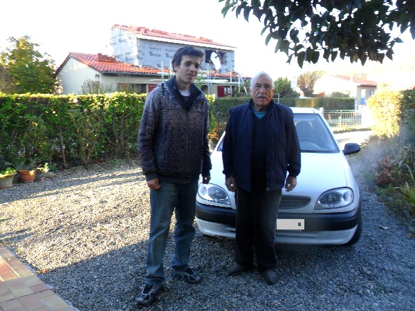
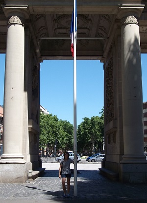
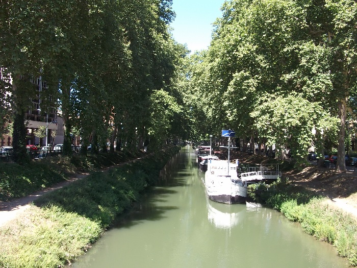
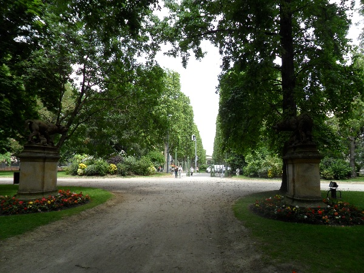
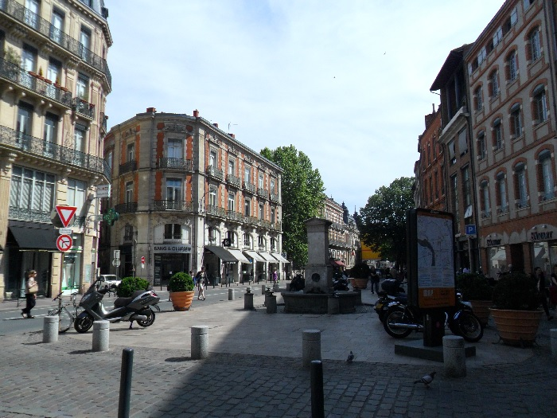

A primeros de 2012 aterrice en Toulouse con la esperanza de encontrar un trabajo y conseguir algo de experiencia laboral.
Con mis títulos recién sacados no tardaría en comprender que no solo los títulos son importantes. En un principio elegí Francia debido a que mi conocimiento del francés era mucho mejor que el inglés y de que lo había aprendido mucho más fácilmente que en inglés.
Empecé en la escuela de idiomas con 13 años frente al inglés que entre con 14 años, pero salí rápido de la escuela ya que cuando estaba llegando a cuarto mi nivel hablado era bastante limitado y el plan de estudios español se enfoca en la gramática y el escrito pero a la hora de pedir, se exceden y no se practicaba casi en clase. De hecho a partir de los 18 años ya no volví a la escuela de idiomas y lo deje para un momento como este donde tuviera que aprenderlo en la calle, con la realidad.

A parte de que mi conocimiento de la lengua era mejor cuento con familia en Francia, mí tía y todos mis primos y algunos primos segundos. Estuve en casa de mí tía el primer mes donde me estuvo ayudando con las búsquedas de casa y con las pequeñas cosas.
A partir de ahí me mude a un piso a realizar mi búsqueda de empleo a Toulouse ya que mi tía vive en un pueblo a 30 km de Toulouse.
Estuve mirando muchos pisos pero me parecían muchos muy caros por una habitación ya que pedían más de 400 euros. Con ese precio en España alquilas un piso completo en mi ciudad.
Y encontré uno a 300 euros, a 10 minutos andando del centro de Toulouse y al lado del aeropuerto.
Estuve viviendo con un ingeniero marroquí muy culto y de mente abierta con el que aprendí muchísimo acerca de las cosas de la vida.

En ese período primero estuve inscrito en una escuela de frances muy prestigiosa, l´Alliance Française en la que estuve un único mes para tener el nivel necesario para mantener una conversación telefónica.
Pronto se me agotaron los 2.000 euros que portaba con lo que me puse a trabajar en lo primero que se me puso a tiro.
Mientras echaba CVs, y aprendía idiomas o en asociaciones ya gratuitas o en los eventos o centros públicos me dedicaba a repartir catálogos de IKEA por la ciudad. Sin haber hecho nunca ningún tipo de trabajo así
quede número uno en el reparto de los 10 días y me cogieron indefinido para repartir ya paquetería y publicidad en barrios asignados.
Aprendí bastante de conducción mientras tuve este tipo de trabajo y no perdía el tiempo ya que mientras repartía solía escuchar la radio francesa.
De hecho mientras estuve allí me lo tomaba bastante en serio, y estuve bastante tiempo sin hablar español, cosa que sería completamente distinta en mis siguientes viajes.
A finales de 2012 ya que la situación no era buena y varios agentes me decían de esperar porque el verano no es el tiempo propicio para encontrar trabajo en Francia, decidí que volvería a España para irme a Reino Unido.
En este tiempo aprendí más que en un año de universidad, había aprendido un montón en el tema de presentaciones, currículos, había realizado multitud de entrevistas en salones, solo me faltaba mejorar mi nivel de inglés.

Toulouse es una ciudad universitaria y como tal hay multitud de jóvenes. Además debido a sus buenas condiciones climatológicas hay un montón de estudiantes erasmus y otras partes de Francia.
La ciudad no tiene mucha polución y el transporte público funciona muy bien con unos precios moderados.
Yo en mis primeros días pagaba con la tarjeta de Tisseo pero al estar sin trabajo poco después me dieron la gratuidad del transporte.
Esto es fundamental, ya que para moverte a las empresas o las agencias si no tienes empleo es costoso.
De esta manera se facilita la vida a uno cuando está en peor situación. Además hay ayudas a los alquileres, si bien por mi corta estancia no los pedí ya que si ganas poco allí difícilmente puedes pagar una vivienda.
Estas ayudas son posibles gracias a los altos impuestos que se pagan en Francia, estado que a mi modo de ver es demasiado socialista y a veces incurre en derroche en otros ámbitos que no comentare aquí.
Francia además tiene una cultura alimentaria muy buena y el sur tiene productos de gran calidad aunque con respecto a las verduras o hortalizas no llegan al nivel de España, pero si comparamos con países del norte es perfecta.
Las panaderías y pastelerías de Toulouse son muy buenas y los restaurantes también aunque esto es general de Francia. Por poco más de 10 euros se puede comer muy bien en Toulouse.

Existe gran sensibilidad a las bicicletas aunque no como otras partes de Europa, y casi todo el transporte se hace o bien por metro o por autobús que cuenta con muchísimas líneas para una ciudad de su extensión.
Además los horarios son muy frecuentes y puntuales no como en España.
Además los pueblos de alrededor son preciosos y existen muchos bosques que hacen que la calidad del aire sea muy buena.
Alrededor hay muchos pueblos con grandes urbanizaciones, por lo que en extensión es muy grande ya que salvo 3 o 4 barrios los bloques de pisos no superan las siete plantas.
La vida en Toulouse era algo monótona pero divertida. Aparte del trabajo y de las entrevistas de trabajo o ferias y salones de empleo, salía bastante a hacer deporte o de fiesta.
Solía ir a los cafés lingüísticos o a actividades por internet. Y hubo bastantes eventos organizados por el ayuntamiento como Toulouse fluvial, donde había bastante deportes a orillas del Garona.
El ayuntamiento prestaba los materiales para todos los deportes todos los días en verano.
Todo esto en conjunto con la gente que ya conocía y con los encuentros con mi familia hizo que pasara un tiempo bastante agradable.
A parte existen multitud de eventos durante el año y exposiciones, en concreto en Toulouse se ubican cerca del estadio de Francia, al sur de Toulouse en la parte norte de La Garona en su cruce con Toulouse.
También ferias agrícolas donde puedes comprar variedades de hortalizas o plantas para cultivar.
Además el gran número de parques y zonas verdes en la ciudad y el estar rodeada de bosques hacen de la ciudad un buen lugar para pasear.
 Además es muy frecuente encontrar gente española ya que hay mucha población española criada en Toulouse venida de dos épocas.
Por un lado los refugiados españoles de la guerra civil española del bando republicano y por otro lado de la época de los 60 como mis tíos.
Jóvenes nacidos con Franco que buscaban un lugar donde prosperar.
Además es muy frecuente encontrar gente española ya que hay mucha población española criada en Toulouse venida de dos épocas.
Por un lado los refugiados españoles de la guerra civil española del bando republicano y por otro lado de la época de los 60 como mis tíos.
Jóvenes nacidos con Franco que buscaban un lugar donde prosperar.
Aquí muestro unas fotos de cómo se viven los partidos de España en la Casa del Pueblo Español en Toulouse, con más emoción y sentimiento que en España si cabe.


En Toulouse existe bastante ambiente. Como zonas de salida está el centro de Toulouse donde existen multitud de bares y algunas pequeñas discotecas que abren algo más tarde.
Normalmente los bares de noche suelen estar abiertos a partir de las 20h ya que en Francia la mayoría de la gente suele cenar a las 19h-20h.
Las discotecas suelen abrir a partir de la 1 o 2 y por lo que pude ver aunque tiene cultura de beber como en España la gente se suele controlar más aparte de que la bebida de graduación es carísima debido a los impuestos del gobierno.
Mismamente ya en un supermercado el precio es más del doble que aquí.
La bebida por excelencia es el vino, que está bastante bien.
Aunque no hay tapas en los bares y suele haber más platos que raciones, la gente es más de salir a cenar y tomar unos vinos.
Eso sí como dije anteriormente la mayoría de restaurantes franceses son bastantes buenos en comparación con España y los precios teniendo en cuenta los ingresos medios de la gente bastante mejores que en España.
También existen los bares que hay más fiesta de la que parece con bajos donde puedes encontrarte de todo y en las zonas menos esperadas.
En cuanto a la noche también hay bastante prostitución y droga en las calles, ya que no está regulada al igual que en España.
© 2016 - All Rights Reserved - Diseñada por Sergio López Martínez

![[Valid RSS]](https://www.feedvalidator.org/images/valid-rss-rogers.png "Validate my RSS feed")